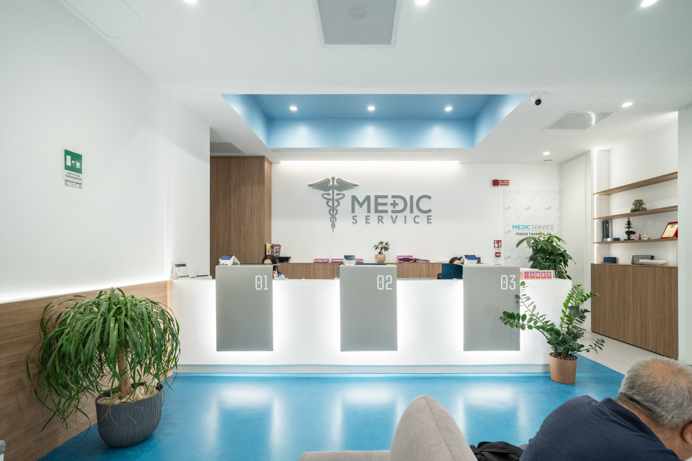
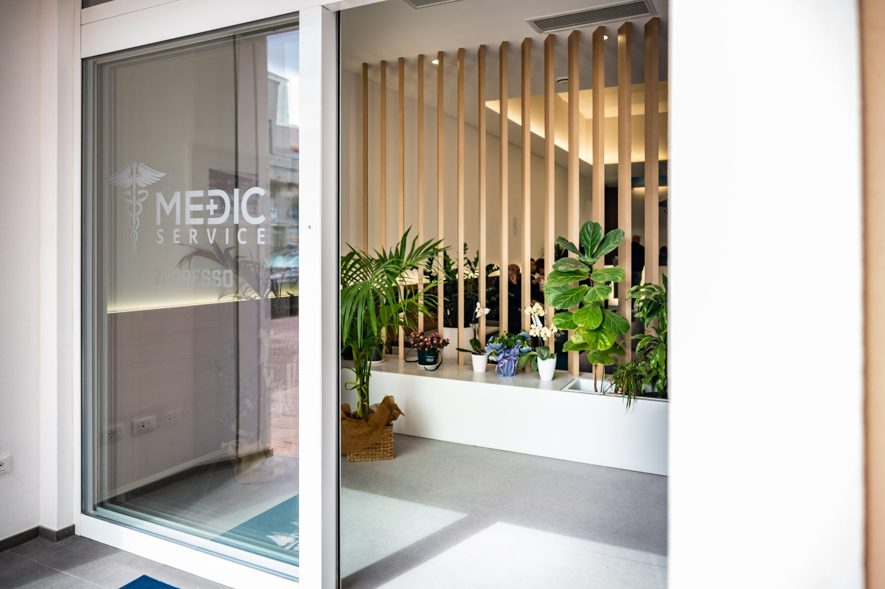
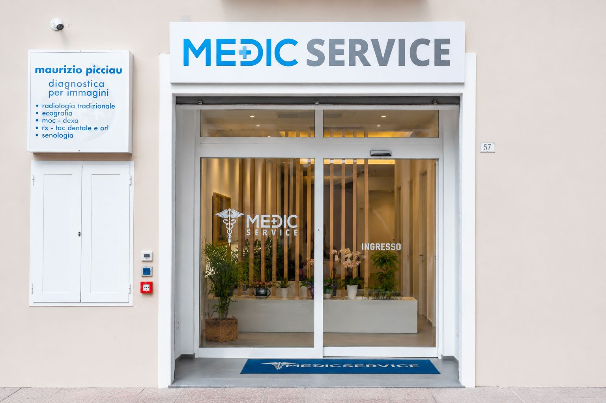

Luce naturale
Ampi lucernai portano luce naturale tutto il giorno: ambienti chiari, mai opprimenti, che rendono l'attesa più leggera.
In Piazza Tharros 57, nel cuore di Oristano, abbiamo costruito un centro medico pensato attorno alla persona: spazi ampi, luce naturale e un'accoglienza che mette a proprio agio fin dal primo passo.
Tutte le aree — visite, diagnostica, chirurgia e medicina estetica — sono riunite su un unico piano, accessibile e facile da percorrere. Niente attese impersonali: ambienti curati, sedute comode e personale dedicato a ogni fase del tuo percorso.

Dalla luce all'accessibilità, ogni scelta progettuale nasce per rendere la tua visita più semplice, serena e sicura.
Ampi lucernai portano luce naturale tutto il giorno: ambienti chiari, mai opprimenti, che rendono l'attesa più leggera.
Ingresso a livello strada e percorsi ampi, senza barriere architettoniche: la struttura è interamente accessibile.
Tre postazioni di accettazione riducono le attese e ti seguono in ogni fase, dall'arrivo al saldo della prestazione.
Superfici facili da sanificare, ambienti dedicati e protocolli rigorosi: la sicurezza è parte del progetto, non un'aggiunta.




Siamo in centro, comodi da raggiungere a piedi e con parcheggi nelle vicinanze. L'ingresso è a livello strada, segnalato dall'insegna Medic Service.

Prenota online in meno di un minuto, oppure chiamaci: pensiamo a tutto noi.
Scegli l'area. Ti mostriamo subito i medici disponibili.
— seleziona con chi vuoi prenotare.
Prossima disponibilità con . Giovedì 11 giugno 2026.
Riceverai conferma via SMS ed email. A presto in Piazza Tharros.